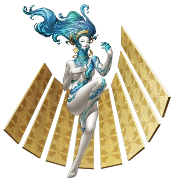

Anahita

New to Redux, Anahita (level 23) is the boss of the First
Sphere in the new megadungeon Womb of Grief. And unlike Morax and Mithras,
she's got a few tricks up her sleeve that make her a more mechanically interesting
fight.
Tips to Prepare:
-
You probably want to fight her AFTER completing
Sector Bootes, because of her level.
-
For player equipment, Green Vest works well to resist her
ice attacks. For guns however, it's not strictly necessary to switch out
the Alabaster for something that has Fire attacks; the reason will
be shown later.
-
Get demons that can hit fire, but also some physical attackers for
later in the fight. But also make sure you have buffs and debuffs,
especially an attack buff.
-
Lastly, bring Dis-Poisons as she has an attack that can poison your team.
Or a demon with Posumudi
The Fight
Anahita resists Gun, nulls Ice, Light and Dark, and is weak to Fire.
Anahita with a Magic stat of 24 is more of a magic attacker, so plan accordingly.
She's a little more involved than the previous bosses, and will switch up her pattern
at half health when she starts using Cocytus; why this is a big deal
shall be explained. Her attacks are as follows:
-
Bufudyne: The main reason why Ice resist is important;
otherwise even with a magic stat of 24 this attack will HURT.
-
Mabufula: Light ice damage to the whole party. Nothing special.
-
Fang Breaker: A light physical damage on one party member,
that lowers their Attack by one stage. Debuffs stack, so having attack buffs or Dekunda
to counteract the debuff is important to keep the fight moving fast.
-
Impure Sigh: A chance to inflict Poison on the whole party.
This is where Dis-Poisons and Posumudi come in handy; after all,
poison damage can seriously impact your odds of survival in this game.
-
Hellish Spurt: One of Anahita's signature attacks,
it's essentially an Ice version of Rampage; 2 to 4 light ice attacks to random
targets. Not as bad as Bufudyne, unless it hits a member 3+ times in a row.
-
Cocytus: The game changer, she starts using this move at half health.
Cocytus acts as a field effect that for 3 turns negates the use of Fire attacks
entirely, and strengthens Ice attacks. Since you can't hit her weakness,
this is where having alternate damage sources comes from so you don't get
stalled. Furthermore, Tarunda can help offset tthe damage boost she'll get from Cocytus.
Make sure you have a decently varied party so this attack doesn't trip you up!